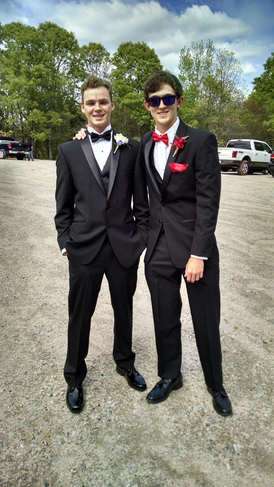

LinkedIn About Section
University of Georgia
Colby Lee Bridwell
Title: UGA Student Majoring in Risk Management and Insurance

Born: June 3 1998
EFFECTIVE WAYS TO REACH ME:
Email: clb52365@uga.edu
Cellular : 706.594.8999
Alternate Cellular : 706.957.0997
Professional Summary
Risk Management and Insurance Major with 2 years experience in interpersonal customer service. I bring leadership qualities, basic programming skills in Java, strong interpersonal skills, strong organizational and ethical skills, and experience working with high value projects in work settings.
Work Experience
Troup County School System
-
Summer Maintenance
Work in small teams in conjunction with existing TCSS employees to maintain school grounds during summer break
-
Operate machinery that assits with lifting, moving, and reparing TCSS equipment
GameStop
-
work as a team of store associates in order to maintain store operations
-
Upheld top-quality workmanship and excellent customer service.
Kimble's Events by Design
-
Interacted with vendors, contractors, and professional services personnel to
receive orders, direct activities and communicate management instruction.
-
Placed, tagged and secured merchandise in diverse designated areas.
-
Completed stock orders and managed inventory levels.
Activities & Interests
2016-2020
| Activity |
Description |
| BCM UGA |
A Christian outreach organization that seeks to spread the Gospel in and around UGA's campus |
| Relay for Life |
Team fundraising event where team members take turns walking around a track or designated path. |
| HERO's of UGA |
Strives to improve the quality of life for the 12,000 children in Georgia affected by HIV/AIDS by raising money to support the programs |